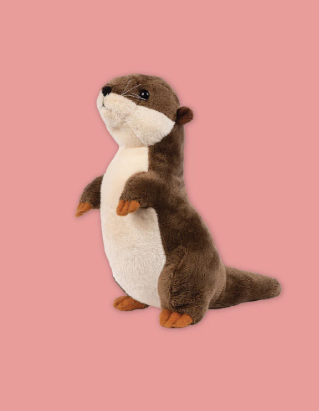
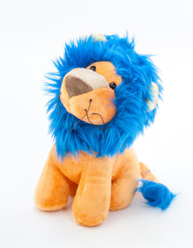

Project Report
Robot Companion
Design a virtual or physical AI companion for emotional support and engagement of elderly individuals, in collaboration with NUS Nursing.
Scope of this report. This project delivers the first-steps, proof-of-concept hardware and software platform: a working mechanically-expressive head, a touchscreen face, and a fully-offline voice interaction loop. A domain-specific fine-tune of the language model, a soft outer shell with tactile sensing, and a larger compute platform for concurrent multimodal perception are all future work. See Chapter 13.
National University of Singapore
Acknowledgments
I thank my project supervisor, A/Prof Khoo Eng Tat of the Department of Electrical Engineering, for his patient guidance throughout this project.
I also acknowledge the open-source community whose projects make an on-device stack of this scope possible on a single 8 GB edge board, in particular the authors and maintainers of llama.cpp, Parakeet TDT, Silero VAD, Piper, YOLO26n-pose, and HSEmotion.
Table of Contents
- Introduction
- Background and related work
- System overview
- Mechanical design and iteration history
- Kinematics
- Servo bus lessons
- Perception subsystems
- Conversation and LLM stack
- Integration and runtime infrastructure
- Display and face
- Testing and verification
- Design under an 8 GB memory budget
- Future work
- Conclusion


Abstract
This report documents a first-steps, proof-of-concept prototype for an AI social companion robot aimed at emotional support and engagement of elderly individuals, developed in collaboration with NUS Nursing. The prototype runs entirely on a Jetson Orin Nano 8 GB with no cloud backend.
The mechanical novelty is a two-degree-of-freedom differential-bevel head: two Feetech ST3215 smart servos mix into head pan and tilt. On the software side, a CSI camera and a 4-microphone array feed a complete voice loop that listens, reasons with a quantised language model, and speaks back through a neural vocoder. A 2.8 inch ESP32 touchscreen renders an affect-driven face synchronised with lip motion.
The report walks through the mechanical iteration history, the kinematics and calibration, the perception and conversation pipelines, and the runtime architecture. It closes with an honest account of the 8 GB memory constraints that shaped the shipped build, and a roadmap for step two and beyond: a domain-specific language-model fine-tune, a soft outer shell with tactile sensing, and a larger compute platform that can keep the multimodal and affect-perception paths live concurrently.
1. Introduction
1.1 The brief
The starting point for this project, set in collaboration with NUS Nursing, was a single-sentence brief:
Loneliness and reduced social engagement are well-known risks in elderly care. Clinical work on companion robots such as PARO (Wada and Shibata, 2007; Ito et al., 2013) shows that even a small embodied presence can reduce agitation and isolation when the system is present, responsive, and approachable. The brief is deliberately open on virtual versus physical. This project takes the physical route, because a body that can look at you, speak to you, and be seen by you is qualitatively different from software on a screen.
1.2 What this report delivers
This is a first-steps, proof-of-concept platform. The goal at this stage is to prove the engineering core is sound, not to ship a clinical product. That core is three things:
- A 2-DOF expressive head, driven by a custom differential bevel gearbox. Mechanical expressivity is the novel physical contribution.
- A touchscreen face, reflecting conversation state and affect through an ESP32-rendered animation.
- A full offline voice loop: listen, reason, speak, all on-device and with no network round-trip.
The system is deliberately general-purpose at this stage. Making it domain-specific for elderly care, that is learning the right vocabulary, tone, reminiscence prompts, daily-living reminders, and safe phrasing around distress, is a fine-tune step that requires clinical data and sign-off. It belongs after the platform is stable, not before.
1.3 What is explicitly out of scope
Three things are deliberately deferred. All three become future work once the platform is validated:
- Domain-specific language-model fine-tune. The current LLM is a general-purpose 1 B-parameter Llama. A companion for elderly users needs vocabulary and tone learned from supervised clinical data. This is a supervised fine-tune, not an architectural change.
- Larger compute platform. The Jetson Orin Nano 8 GB is the lower bound for this class of stack. Its 8 GB budget forced real trade-offs (see Chapter 12): a text-only LLM instead of multimodal, and face-emotion perception disabled in the integrated loop. A larger board (Orin NX 16 GB or AGX class) would make both live concurrently.
- Soft outer shell and tactile input. The current build is a visible electromechanical prototype. A soft plush housing, inspired by forms such as the Singapore otter or NUS Linus, with pressure-touch regions, is the hardware step that turns this into something an elderly user would actually want to hold. It follows the platform, not the other way around.
Framed as a roadmap: step one is the platform in this report. Step two is the language-model fine-tune on a larger compute platform. Step three is the soft shell and tactile sensing. Step four is a clinical pilot with NUS Nursing.
1.4 How this report is organised
The report is structured so a reader can stop at the end of any chapter and still have a coherent picture of the system.
- Chapter 2 covers related work and the form-factor references this project builds on.
- Chapters 3 through 6 describe the hardware, the mechanical iteration history, the kinematics, and the low-level servo bus.
- Chapters 7 through 10 cover the perception stack, the conversation stack, the runtime infrastructure, and the face display.
- Chapter 11 documents the test strategy.
- Chapter 12 is the key chapter for evaluating the shipped build. It explains the 8 GB memory budget and the design decisions it forced.
- Chapter 13 lays out the roadmap. Chapter 14 closes.
2. Background and related work
2.1 Three archetypes
The design space for affective companions clusters around three commercial references. Each emphasises a different communication channel, and this project deliberately draws from all three.


| Reference | Primary channel | Role | Relevance here |
|---|---|---|---|
| PARO (Shibata, 2012) | Tactile plush, subtle motion and sound. | Clinical companion for dementia care; reduces agitation. | Establishes that a small embodied presence works. Motivates the head-first design. |
| LivingAI EMO (Living.ai, 2022) | Expressive motion plus animated eyes on a screen. | Consumer desk companion; personality driven by micro-movements. | Closest analogue: screen face plus active head. |
| Qoobo (Yamamoto, 2018) | Motion only (a tail). | Companion for people who cannot keep pets. | Shows that a single well-controlled DOF carries presence. |
2.2 Why head orientation matters
Head orientation is one of the most economical cues humans have for judging attention. A system that simply looks at you when you speak reads as attentive in a way that static rendering cannot match.
This project places that cue at the centre of its physical expressivity. A two-DOF head orients toward a detected face. A screen face then tracks the conversation state through its own set of affect-driven expressions.
2.3 Edge multimodal AI on 8 GB-class SoCs
Running the full loop on-device matters for two concrete reasons:
- Privacy. A companion robot should not stream raw audio or video to the cloud, especially in a care setting.
- Latency. Sub-second turns require tight local coupling, not an internet round-trip.
Three recent developments have made this class of system practical on an 8 GB edge SoC. 4-bit quantisation for LLMs (the GGUF format used by llama.cpp; Gerganov, 2023) reduces model weight memory by about four times. ONNX-optimised streaming ASR (Parakeet TDT; NVIDIA, 2024) gives real-time speech-to-text on a small GPU. And lightweight neural vocoders (Piper, Rhasspy Project, 2023) make high-quality TTS feasible on CPU alone. Mehrish et al. (2023) give a broader survey of this class of on-device audio stack.
The Jetson Orin Nano 8 GB is viable for this class of stack, but tight. Chapter 12 discusses exactly how tight, and what it forced the shipped build to drop.
2.4 Form-factor inspiration
The longer-term vision is a soft outer shell that makes the robot approachable. Two local references shaped that direction.


The current build is a visible electromechanical prototype, so the shell is out of scope. It returns in Chapter 13.
2.5 Open-source building blocks
The build stands on the following open-source projects: llama.cpp (Gerganov, 2023), Parakeet TDT (NVIDIA, 2024), Silero VAD (Silero Team, 2023), Piper (Rhasspy Project, 2023), Kokoro, YOLO26n-pose (Jocher et al., 2024), HSEmotion (Gerasimov, 2023), TFT_eSPI, Rhubarb, Mem0 (Taggers, 2023), Chroma, and LiveKit EOU.
3. System overview
With the design rationale in place, this chapter lays out the system as a whole: the hardware components, how they connect, and how the software is layered. The four chapters that follow (4 to 6) then zoom into the mechanical side, and Chapters 7 to 10 do the same for the software side.
3.1 Hardware
The robot is one Jetson with six peripherals. Each peripheral is a direct, single-cable link.
- Jetson Orin Nano 8 GB. Compute (CPU and GPU on unified memory, JetPack 6).
- ReSpeaker 4-mic USB array. Audio input plus direction of arrival. XMOS XVF-3800 DSP with a 12-LED ring.
- IMX219 CSI camera. Vision input at 640 × 480, 30 fps.
- Diymore 2.8 inch ESP32 TFT. ILI9341 display, XPT2046 resistive touch, CH340 USB-serial. Renders the face and provides tap input.
- 2 × Feetech ST3215 smart serial servos. Head actuation, mirror-mounted with 20-tooth bevel pinions.
- Waveshare CH343 USB-serial bus adapter. 1 Mbaud half-duplex Feetech bus.
- USB speaker. TTS output via
aplay. - 3D-printed PLA mount. Holds the gearbox, head, and sensors.

3.2 Software layers
The code splits into four clear layers.
- Leaf subsystems. Audio, vision, LLM, motor, display.
- Orchestration. ConversationManager and BehaviorEngine own the turn and the per-state motor behaviour.
- Core plumbing. EventBus, GPU arbiter, config, readiness, telemetry.
- Entry point.
main.pywires everything up in a fixed order (see Chapter 9).

3.3 Subsystem summary
The software splits across five domains. Each domain owns a Python package under companion/, plus the ESP32 firmware under firmware/.
- Audio (
companion/audio/): mic capture, Silero VAD, Parakeet STT, Piper TTS, ReSpeaker DOA, barge-in. - Vision (
companion/vision/): CSI camera, YOLO26n-pose face detection, face tracker, and the HSEmotion affect classifier. - LLM and conversation (
companion/llm/,companion/conversation/): LLM engine, prompt builder, turn state machine, ConversationManager. - Motor and display (
companion/motor/,companion/display/,firmware/): ST3215 bus, kinematics, calibration wizard, ESP32 face firmware. - Core plumbing (
companion/core/): EventBus, GPU arbiter, HealthMonitor, telemetry, config, readiness.
Most subsystems are live in the shipped integration. Two are currently held back by the 8 GB memory budget (Chapter 12): the HSEmotion affect classifier runs correctly standalone but is not active concurrently with the voice loop, and multimodal scene captioning waits on a larger-VRAM platform. Persistent memory (Mem0 + Chroma) is also deferred.
A full per-subsystem index with file paths, purpose, and integration status is in Appendix C.
4. Mechanical design and iteration history
The novel physical contribution is the head, so the mechanical side came first. The head went through six CAD revisions before it worked reliably. Each revision exposed one new failure mode. The sections below tell that story in order. The kinematics of the final design are then treated in Chapter 5.
4.1 Original concept

Two motor-driven pinion bevels mesh with a single crown gear. Two inputs, two outputs. Every later revision tweaks packaging and pivot geometry; the kinematic principle never changes.
4.2 Prototype 1: too large a footprint

Mechanically correct, but the base and motor pockets were too bulky, and the head was sized for a much larger enclosure than this project ever intended to carry. The next revision tightened the envelope.
4.3 Prototype 2: cable routing collides with the servo body


Prototype 2 was more compact, but the side-mounted servos put their cable exits directly in the sweep of the bevel pinions. No routing path avoided the gear. Prototype 3 moved the cable exit behind the servo body.
4.4 Prototype 3: parts sectioned for printing and assembly


The monolithic base was split into two printable halves with discrete servo pockets and an accessible central spine. Print orientation was chosen so layer lines align with the direction of tooth load. The split also left room for fasteners and bearing seats.
4.5 Prototype 4: gear disengages from an unaligned pivot


Packaging was now clean, but the head's tilt pivot was not concentric with the bevel crown. The pivot sat slightly below the mesh plane. Any tilt command introduced a vertical displacement at the mesh, and the pinion skipped teeth under load. The fix was to move the pivot into the crown plane.
4.6 Prototype 5: pivot relocated onto the crown axis


With the tilt pivot on the crown plane, tilt is a pure rotation at the mesh. Engagement holds across the full travel range. No more skipped teeth.
4.7 Final CAD assembly


Minimal mount footprint, accessible fasteners, cable exit re-routed behind the servo bodies, pivot on-axis, and the head payload cantilevered forward with its centre of mass close to the tilt axis to keep static torque low.
4.8 Full assembled prototype
[affect: happy] tag from the LLM reply.These are the photos of the actual build on its 3D-printed PLA mount. Visible: the 40-tooth crown and 20-tooth pinions beneath the head, two ST3215 servos mirror-mounted with cables routed to the rear, a CSI ribbon to the camera, and the Diymore 2.8 inch TFT rendering the face. The two states show the display subsystem (Chapter 10) responding to affect commands.
4.9 Lessons
| Issue | Where it surfaced | Fix |
|---|---|---|
| Form factor oversized. | P1 | Tighten envelope to motor, gearbox, and head payload only. |
| Cable exit clashes with gear sweep. | P2 | Route cables behind servo bodies. |
| Unprintable monolithic geometry. | P2 to P3 | Section into two halves along a tooth-load-aware plane. |
| Tilt pivot not concentric with bevel crown. | P4 | Move the pivot into the gear-mesh plane (P5). |
| Head payload off-axis causes sag. | Final | Cantilever TFT + camera with CoM close to the pivot. |
5. Kinematics
With the final mechanism in place, the next question is how the two motor inputs map to head pan and tilt. This chapter derives the forward and inverse kinematics, describes the calibration procedure, and ends with a live demonstration of the closed loop.
5.1 The mechanism
The head is a classical two-input bevel differential.
- Two Feetech ST3215 servos, mirror-mounted.
- Each drives a 20-tooth bevel pinion.
- Both pinions mesh with a single 40-tooth crown gear on the head.
- Gear reduction:
G = 40 / 20 = 2.0.
The pinions mesh on opposite sides of the crown, so their rotations combine differentially.
- Same direction on both motors produces tilt.
- Opposite directions on the two motors produces pan.
The two head-frame degrees of freedom come from mixing the two motor inputs. There are no separate physical pan and tilt axes.

companion/motor/kinematics.py.5.2 Forward and inverse equations
Let θL and θR be the left and right motor rotations (radians, relative to calibrated zero). Let p and q be head tilt and pan.
The ST3215 uses a 4096-tick single-turn magnetic absolute encoder. Tick-radian conversion is therefore fixed:
5.3 Inverse pipeline (pose to ticks)
A commanded (pan, tilt) becomes a pair of tick setpoints in five stages. Every stage pulls its parameters from config.yaml; calibration fills those parameters in.

- Clamp. Saturate to
pan_limits_degandtilt_limits_degso the controller never commands past a stop. - Axis inversion. Flip pan or tilt per
invert_panandinvert_tilt. - Solve the inverse. θL = G·(pitch + pan), θR = G·(pitch − pan).
- Per-motor direction sign. Mirror-mounted servos run opposite senses; ±1 per motor is set during calibration.
- Zero-tick offset. Add
left_zero_tickandright_zero_tickto produce absolute encoder setpoints.
Both tick values go out through Feetech's GroupSyncWrite with the same GOAL_TIME. Without the shared GOAL_TIME, pure-pan commands produce a transient tilt because one motor reaches its target before the other.
5.4 Calibration wizard
Calibration values are measured once per mechanical unit through a nine-page Qt wizard (companion/ui/calibration_window.py). Each page captures one value. The last page writes every parameter back into config.yaml.
| Step | What it does | Output |
|---|---|---|
| 1. Connect | Open the bus; ping both servo IDs. | connection confirmed |
| 2. Direction | Jog each motor ±5°; user confirms direction. | left_direction, right_direction |
| 3. Rough zero | Torque off; hand-hold head at centre and level; capture ticks. | rough *_zero_tick |
| 4. Combined sanity | Command presets; toggle axis inversions if needed. | invert_pan, invert_tilt |
| 5. Limits | Step-jog to each mechanical stop; mark the tick. | limit ticks |
| 6. Refine zeros | Pan zero is the midpoint of limits; tilt zero from phone level. | refined zeros, symmetric limits |
| 7. Gear ratio | Command a known motor delta; measure the resulting head angle. | gear_ratio_measured |
| 8. Verify | Live 3D sphere preview; right-drag to move the head. | visual confirmation |
| 9. Save | Write every value back to config.yaml. | persisted calibration |
5.5 Current calibration on this unit
Values lifted directly from config.yaml:
motor:
left_zero_tick: 2514
right_zero_tick: 2594
left_direction: +1
right_direction: −1
gear_ratio_measured: 2
backlash_deg: 1
invert_pan: false
invert_tilt: false
pan_limits_deg: [−37.9683, +37.9683]
tilt_limits_deg: [ −8.0635, +8.0635]5.6 The wizard in action

5.7 Live demonstration

set_head_pose call plus telemetry.Each slider move traces the same closed loop:
- Slider input. The operator moves the Qt verify slider to a target pan/tilt.
- Inverse kinematics. The target is converted to left and right motor ticks using the pipeline from Chapter 5.3.
- Sync write. Both tick setpoints are pushed to the servos in one atomic
GroupSyncWrite. - Synchronised motion. A shared
GOAL_TIMEmakes both motors finish the move in the same window. - Telemetry read-back. The controller polls actual encoder positions at 30 Hz.
- Forward kinematics. Actual ticks are converted back to head pan/tilt degrees.
- Preview update. The 3D sphere in the Qt window moves to the measured pose, closing the loop.
5.8 Safety systems
- Thermal cutoff. The controller polls each servo at 30 Hz and disables torque above 65 °C (
motor.max_temperature_c). - Stall detection. If either motor's position error exceeds 30 ticks (about 1.3° at the head) for more than 1.5 s, the controller overwrites the goal with the current actual position. The servo stops pushing but still holds against gravity.
- Synchronised moves. All motion commands share a 150 ms
GOAL_TIME. Pure pan stays pure.
6. Servo bus lessons
The mechanism and kinematics above rely on the low-level servo bus doing exactly what it is told. The Feetech ST3215 is a capable smart servo, but it has a handful of protocol quirks that were non-obvious and that cost real debugging time. They are documented here so the bus code in companion/motor/bus.py reads as a sensible response rather than a pile of special cases.
- SDK endianness. The STS / SMS family needs
PacketHandler(0)(little-endian). Wrong value byte-swaps every 2-byte register read and write. The bug is hard to spot because write and readback match on the host, but the firmware sees transposed values. - EEPROM lock and commit timing. Register 55 (
LOCK) defaults to 1 at power-up. EEPROM writes only persist across power cycles if the lock is cleared first and re-asserted after. Commits take about 10 ms; back-to-back writes need a 30 ms sleep. - Multi-turn trap. If a servo is left in multi-turn mode, writing a clamped single-turn goal causes a multi-revolution unwind. The bring-up
set-single-turncommand forcesMIN = 0, MAX = 4095, MODE = 0. - GOAL_TIME synchronisation. Both motors share a
GOAL_TIME. They reach the target in the same window regardless of distance travelled. Without it, a commanded pure pan transiently tilts.
7. Perception subsystems
With the mechanical side out of the way, the rest of the report shifts to the software stack. This chapter covers the two perception branches that feed the rest of the system:
- Audio drives turn-taking and conversation.
- Vision drives face tracking and (in isolation) affect estimation.
Both run continuously. Their outputs feed the conversation stack in Chapter 8.
7.1 Audio pipeline

Capture: companion/audio/io.py
The ReSpeaker is opened as a 16 kHz mono PyAudio stream, with an arecord fallback for environments where PyAudio fails. Chunks are 512 samples (32 ms), which matches Silero VAD's input size. A watchdog flags the input as starved if no chunk arrives for two seconds.
ReSpeaker direction of arrival: companion/audio/respeaker.py
DOA is polled at 10 Hz over USB HID (XMOS vendor control transfer). It combines with face position to drive the engagement gate: the robot only engages when the user's voice direction matches the face's on-camera direction. The 12-LED ring is driven by the same module. The calibrated offset on this unit is doa_offset_deg = -93.48.
Voice activity detection: companion/audio/vad.py
Silero VAD v5 runs as an ONNX session in CPU mode (see Chapter 12 for why). Threshold is 0.35, tuned for the ReSpeaker's level profile. A four-state machine (IDLE, SPEECH_START, SPEAKING, SPEECH_END) calls back into the ConversationManager at the transitions.
Speech-to-text: companion/audio/stt.py
Parakeet TDT 0.6B v3 is the primary backend. It runs as an ONNX graph on CUDA. A five-second utterance transcribes in about 200 ms. Faster-whisper is the fallback.
Text-to-speech: companion/audio/tts.py
Piper is the default on the 8 GB budget: CPU-only, lightweight, near real-time. Kokoro is available for higher quality and can be swapped in at runtime via set_engine().
Barge-in detection: companion/audio/barge_in.py
While the robot speaks, the microphone picks up both the user (if they interrupt) and the TTS bleed. The detector runs four gates.
- AEC-lite: subtract the TTS envelope estimate from the mic RMS.
- VAD gate: require speech probability above threshold.
- SNR gate: residual must exceed the noise floor by 10 dB.
- Persistence gate: require 120 ms of sustained voiced activity.
Only if all four pass is the interrupt accepted.
7.2 Vision pipeline

Camera: companion/vision/camera.py
A GStreamer pipeline (nvarguscamerasrc → NV12 NVMM → BGRx → BGR → appsink) pulls 640 × 480 frames at 30 fps from the CSI port. Conversions stay on GPU memory until the last step to minimise CPU load. A V4L2 fallback handles USB webcams. A 1.2 s auto-exposure settle at startup prevents green or magenta first frames.
Face detection: companion/vision/face_detector.py
YOLO26n-pose detects person keypoints and synthesises a face bounding box from the head keypoints (nose, eyes, ears). This is more robust than a dedicated face detector on a wide-angle lens, and the eye midpoint is a better aim-point than a bbox centroid.
Orchestrator: companion/vision/pipeline.py
The top-level vision thread runs at 30 fps, detects faces every second frame (15 Hz effective), smooths position with an EMA (α = 0.7), and fades confidence to zero over three seconds if the face is lost. The output feeds the face tracker, which commands pan and tilt.
8. Conversation and LLM stack
Perception feeds a turn-oriented conversation loop. This chapter covers how a single conversation turn flows from microphone input to TTS output, the state machine that governs it, the LLM engine that drives the replies, and the prompt structure that injects perception hints into every user message.
8.1 Turn state machine

Legal transitions are enforced explicitly in companion/conversation/states.py. Illegal transitions fail loudly, which is what prevents race conditions like a late STT arrival after the user has already started a new turn.
8.2 One turn, end-to-end

The ConversationManager (companion/conversation/manager.py) owns the turn lifecycle: engagement gates, streaming STT, prompt assembly, LLM generation, sentence split to streaming TTS, and event emission. Every phase stamps a timestamp into a per-turn TurnTrace.
8.3 LLM engine
The engine (companion/llm/engine.py) wraps llama-cpp-python. The shipped default is Llama 3.2 1B in 4-bit GGUF. Gemma-4-e2b, Gemma-4-e4b, and the multimodal Gemma-4 with projector are supported through a one-line config swap.
8.4 Prompt construction
Prompts are assembled in companion/llm/prompt.py. Three optional hint prefixes can be attached to the user message:
- Emotion hint (when HSEmotion is running).
- Scene hint (when a multimodal LLM is loaded).
- Memory hint (when Mem0 is enabled).
The system prompt asks the LLM to end every reply with a terminal [affect: happy | curious | confused | surprised | affectionate | sad | neutral] tag. The tag is stripped from the spoken output and dispatched to the ESP32 as a FACE command, driving the expression change in figures 16 and 17.
9. Integration and runtime infrastructure
Every subsystem described so far is owned by its own Python package, but the running system is one process. This chapter covers the runtime glue: the bring-up sequence, the event bus that lets subsystems talk without coupling, the GPU arbiter that keeps realtime work ahead of background work, and the health and telemetry layers.
9.1 Bring-up order
Bring-up is a fixed sequence. The order matters because of how unified memory fragments across different libraries (more on this in Chapter 12.2).

9.2 Event bus

9.3 GPU arbiter
companion/core/gpu_arbiter.py is a cooperative two-priority lock.
- Realtime lease. Turn-time LLM and TTS always win.
- Background lease. Scene captioning and telemetry compute poll
should_yield()between iterations and drop the lock when realtime is waiting.
Cooperative rather than preemptive. Avoids the priority-inversion scenarios that come with locking across GPU libraries.
9.4 Health monitor and readiness
- HealthMonitor runs at 1 Hz. It watches for mic starvation, stale camera frames, and motor over-temperature. A degraded event surfaces a spoken warning through the TTS path.
- Readiness checks every model-file path named in
config.yamlat startup. A missing critical model fails the boot rather than letting the system come up half-broken.
9.5 Telemetry
Every turn writes a JSONL trace to logs/traces_<date>.jsonl: phase timestamps, token counts, speaker label, emotion snapshot. An in-memory ring of 100 recent turns feeds the GUI latency card with rolling p50 / p95.
10. Display and face
The last user-facing piece is the face itself: the 2.8 inch touchscreen rendered on an ESP32, plus three Qt desktop windows used during development and calibration.
10.1 ESP32 firmware
The ESP32 runs an Arduino / PlatformIO firmware (firmware/companion_face/) using TFT_eSPI for the ILI9341 display and XPT2046_Touchscreen for the resistive touch panel. The face is drawn locally on the ESP32; the Jetson only sends abstract state commands.
10.2 Serial protocol
115 200 baud, line-delimited ASCII, bidirectional.
# Jetson → ESP32
FACE v=+0.72 a=+0.30 talk=1 listen=0 think=0 sleep=0 gaze=-12 privacy=0
VISEME ahh
SCENE face | quickgrid | morelist
PRIVACY 1 | 0
# ESP32 → Jetson
BTN mute_mic | stop_talking | sleep | more | timer | remind_me
TOUCH 120 185
BOOT companion_face10.3 Expression engine
Twelve expressions are available.
- Derived from valence and arousal: neutral, happy, excited, surprised, sad, angry, calm.
- Explicit ornaments (when the valence-arousal circumplex of Russell (1980) is not specific enough): confused, thinking, idea, love, wink, listening.
The LLM's [affect: ...] tag selects among these. During SPEAKING, the chosen expression is blended with a lip-sync envelope from the TTS.
10.4 Real hardware face
The photographs in Chapter 4.8 are the display subsystem's actual output. Eye shape, eyebrow angle, and mouth curve respond to the affect tag. The same display renders the quick-tile menu (mute_mic, stop_talking, sleep, more) when touched.
10.5 Qt GUIs
Three desktop windows exist for development and calibration.
Main window: companion/ui/main_window.py
Three-column dashboard.
- Left: conversation transcript, push-to-talk button.
- Centre: state indicator, Russell-circumplex emotion visualiser, latest scene caption.
- Right: DOA compass, mic RMS bar, STT latency, LLM token rate, system monitor.
Calibration wizard: companion/ui/calibration_window.py
The nine-page motor bring-up described in Chapter 5.4. Figure 20 shows page one.
Debug GUI: tests/debug_gui.py
Five tabs, each exercising one subsystem in isolation.
- Audio: waveform, VAD probability, DOA compass.
- STT: record and transcribe with latency readout.
- LLM: one-shot chat.
- Vision: camera preview, face bbox, emotion circumplex.
- Face: trigger preset expressions on the ESP32.
Representative widgets
Offscreen captures of two widgets from companion/ui/widgets/.


11. Testing and verification
Everything above is only useful if it keeps working. The test surface is layered by cost and scope: fast deterministic tests at the bottom, slower integration tests above them, and a progressive bring-up notebook at the top. Each layer has a clear purpose.
11.1 Unit tests (tests/unit/)
Deterministic tests for parts that must never silently change.
- Config loader layering (YAML plus env overrides).
- Event-bus exception isolation.
- GPU-arbiter priority contract.
- Conversation state-machine legality.
- Turn barge-in.
- Telemetry ring.
- LLM affect-tag parser.
Execution time is under two seconds.
11.2 Kinematics tests (tests/test_motor_kinematics.py)
Nine property-style tests on the pure-function kinematics: round-trip identity, zero pose mapping, soft-limit clamping, pure pan and pure tilt, gear ratio scaling, axis inversion, non-zero calibration, degrees-to-ticks round-trip. These caught several sign errors during bus-code bring-up.
11.3 Integration tests (tests/integration/)
- Boot smoke. Imports every module and constructs every object without running the main loop. Catches structural breakage before it hits a real device.
- HealthMonitor. Injects a starved-mic condition and confirms the correct
HealthDegradedevent is published.
11.4 CLI probes (tests/cli.py)
python -m tests.cli <probe> runs a per-subsystem sanity check: env, audio, stt, llm, tts, vision, face, pipeline. all runs the core four and prints pass or fail. This is the bring-up acceptance check after a fresh install.
11.5 Notebook (setup_and_test.ipynb)
Six progressive stages: dependencies, preflight, pytest, debug GUI, CLI, simulated motors, real motors. The last stage parses logs/traces_*.jsonl into a p50 / p95 histogram for the end-of-speech to first-audio metric.
11.6 Live demonstration
The still in Figure 21 is the integration-test evidence. The calibration preview, motor controller logs, and physical head all respond to the same slider event on the same frame.
12. Design under an 8 GB memory budget
This is the key chapter for anyone evaluating the shipped build. It explains why the integrated system looks the way it does. None of these decisions are architectural compromises. Every one of them is a resource decision, forced by the unified 8 GB memory budget on the Jetson Orin Nano.
12.1 The budget
The Jetson has 8 GB of unified memory. One DRAM pool serves CPU, GPU, and ISP buffers. After the OS, kernel, Python, and camera ring, roughly 5 GB is available for AI models and KV cache. Every model competes for the same pool; there is no separate VRAM to fall back on.

12.2 Allocation-order fragmentation
Every ONNX Runtime session opens its own CUDA arena on first inference. Loading several ONNX sessions before the LLM fragments the GPU heap, and the LLM's request for a single contiguous 1 to 2 GB block fails.
runtime.onnx_cuda_enabled: false. ONNX runs on CPU. The LLM gets a clean contiguous VRAM allocation. Silero VAD and YOLO are small enough on CPU. Parakeet takes its CUDA session after the LLM has claimed its block.
12.3 Context-length halving
The LLM context window is set to 1024 tokens, half the stock default. KV cache grows linearly with context length, so halving it halves the LLM's memory cost during a conversation. The system prompt (about 120 tokens), the per-turn hint prefixes, and six conversation exchanges still fit comfortably. No context overflow was observed in testing.
12.4 Text-only LLM shipped
The original design targets a multimodal Gemma-4 that can answer "what do you see?" questions by fusing a camera frame with the user's question through a projector head. In isolation, it worked.
On the fully-integrated 8 GB budget, with Parakeet, camera buffers, and YOLO all resident, the multimodal Gemma plus its projector pushed memory pressure high enough to cause allocation failures mid-conversation. The shipped default is therefore Llama 3.2 1B, text-only.
The application code still supports the multimodal path. It is a one-line config swap. The integrated build ships text-only.
12.5 The capability cascade
Dropping the multimodal LLM removes a cluster of downstream capabilities:
- Scene-aware replies, such as "describe what you see".
- Visual question answering, such as "what is this object?".
- Any reply that cites what the camera currently shows.
SceneWatcher and the VQA branch of the router both exist in the codebase and were verified in isolation on the multimodal Gemma. They are absent from the integrated turn only because their consumer, the multimodal LLM, is not loaded.
12.6 Emotion classification: works standalone, not integrated
The HSEmotion 8-class classifier (companion/vision/emotion_classifier.py) is functional in isolation. When vision.emotion_enabled is set and nothing else is running, the pipeline produces per-frame labels, valence and arousal coordinates on Russell's circumplex, and the smoothed state that drives the debug-GUI visualiser.
It is not active in the integrated build. Running it alongside the face detector, LLM, Parakeet, TTS, and camera buffer pushed the 8 GB pool into swap or allocation failure over extended runs (tens of minutes). The decision was to keep the core voice loop reliable rather than crash part-way through a conversation.
12.7 The focus principle
The working rule throughout integration was: prioritise a reliable core loop. The core loop is the minimum path a user depends on during a conversation:
Optional subsystems that are not needed for that loop, such as persistent cross-session memory, per-speaker identification, and semantic end-of-utterance, are disabled in config rather than removed. They are still visible in the codebase and are one flag away from re-enabling once the budget is re-profiled.
12.8 Latency
Target: end of speech to first TTS audio ≤ 800 ms, with an interrupt latency of roughly 300 ms. These are the configured targets and what the notebook's latency-histogram cell is calibrated against. Measured p95 values from the JSONL traces are comparable on typical utterances (five to eight words) and degrade gracefully on longer inputs as Parakeet and the LLM each take more time.
13. Future work
The work in this report is deliberately scoped as a first-steps proof of concept. The roadmap below turns that platform into a clinical-ready companion for elderly care, in the order in which each step unlocks the next.
13.1 Step two: better compute and a domain-specific language model
Two changes sit at the top of the roadmap because they unblock the most capability at once.
- Move to a larger edge board. The Orin Nano 8 GB was the lower bound for this class of stack, and the 8 GB budget forced real trade-offs (Chapter 12). An Orin NX 16 GB or an AGX-class board would make the multimodal LLM, Parakeet STT, HSEmotion affect perception, and persistent memory all resident at once. Every subsystem below inherits this change.
- Domain-specific language-model fine-tune. The current shipped LLM is a general-purpose 1B Llama. A companion for elderly users needs a tone and vocabulary that are learned from supervised data: reminiscence prompts, medication and daily-living reminders, safe phrasing around distress, and dialect-aware small talk. This is a supervised fine-tune (LoRA is enough at this scale) on a small clinical dataset, once that dataset can be prepared with NUS Nursing.
- Emotion back in the loop. HSEmotion is already wired and verified in isolation. With the memory headroom from the new board, it can run concurrently with the voice loop and feed live valence and arousal into the prompt.
- Multimodal replies and scene awareness. The SceneWatcher and VQA plumbing is already in the codebase. A resident multimodal LLM brings back "what do you see?" style answers, which is exactly the capability a visually-impaired or housebound user benefits from.
13.2 Step three: form factor and tactile input
- Soft outer shell. The current prototype is an electromechanical box. A plush outer housing, inspired by the references in Chapter 2.4, is what makes the robot something an elderly user would actually pick up and hold. The internal skeleton already accommodates this direction.
- Pressure-touch sensing. Conductive or pressure-sensitive regions on the shell (belly, head, tail) give the user a non-verbal input channel. This is the PARO interaction pattern and it is well validated clinically.
- Expressive gesture actuator. The behaviour layer already supports per-state gain and scheduled motion. An extra degree of freedom (for example a tail) makes the robot communicate with motion as well as with the face.
- Custom wake word. The openWakeWord synthetic pipeline is scaffolded. A few hundred voiced samples (plus negatives) would close the last always-on interaction mode.
13.3 Step four: clinical validation
- Structured pilot with NUS Nursing. The design rests on the PARO, LivingAI EMO, and Qoobo literature but has not itself been evaluated with elderly users. A small structured pilot (engagement time, self-reported affect, caregiver observation) in the intended care setting is the step that validates or revises every design decision up to this point.
14. Conclusion
The brief was to design an AI companion for emotional support and engagement of elderly individuals. This report delivers step one of that brief: the engineering platform.
The platform has four working parts. A 2-DOF differential-bevel head with calibrated kinematics. A voice-interaction loop that listens, reasons, and speaks without a network round-trip. A programmable touchscreen face that reflects conversation state. A runtime architecture that keeps it all scheduled on a single 8 GB edge board.
The gap between the full design and the shipped integration, no multimodal replies and no affect perception running concurrently with the voice loop, is a resource story and not an architectural one. The plumbing for both is present and tested at the subsystem level. Both are one headroom improvement away from being live.
The primary technical contribution at this stage is the mechanical head. The iteration history in Chapter 4 and the kinematics in Chapter 5 document a compact, printable two-input gearbox that produces two independent head-frame degrees of freedom from two off-the-shelf smart servos. Bring-up runs end-to-end through a wizard that writes its calibration back to the project's config.
The next steps are laid out in Chapter 13: a larger edge board to make the multimodal and affect perception paths live concurrently, a domain-specific language-model fine-tune prepared with NUS Nursing, a soft outer shell with tactile input, and a structured pilot in the intended care setting. Each step builds on the platform that this report has now proven works.
References
- Gerasimov, S. (2023). HSEmotion: A real-time efficient facial expression recogniser. Open-source release. github.com/HSE-asavchenko/hsemotion
- Gerganov, G. (2023). llama.cpp: Inference of LLaMA models in pure C/C++. Open-source release. github.com/ggerganov/llama.cpp
- Grauman, K. et al. (2022). "Ego4D: Around the world in 3,000 hours of egocentric video". Proc. IEEE CVPR, 18995-19012.
- Ito, T. et al. (2013). "Effect of robot seal PARO on neuro-psychological symptoms in elderly individuals with dementia". Journal of the American Medical Directors Association, Vol 14(9), 661-667.
- Jocher, G. et al. (2024). Ultralytics YOLO26n-pose: Keypoint detection with a nano backbone. Open-source release. github.com/ultralytics/ultralytics
- Kawaguchi, Y. et al. (2012). "Evaluation of a therapeutic seal robot in elderly care". Gerontechnology, Vol 11(2), 366.
- Living.ai (2022). EMO: A petite desk pet with a mind of its own. Product documentation. living.ai/emo
- Mehrish, A., Majumder, N., Bharadwaj, R., Mihalcea, R. and Poria, S. (2023). "A review of deep learning techniques for speech processing". Information Fusion, Vol 99, 101869.
- NVIDIA (2024). Parakeet TDT 0.6B v3: Streaming transducer speech recognition. Hugging Face model release. huggingface.co/nvidia/parakeet-tdt-0.6b-v3
- Rhasspy Project (2023). Piper: A fast, local neural text-to-speech system. Open-source release. github.com/rhasspy/piper
- Russell, J. A. (1980). "A circumplex model of affect". Journal of Personality and Social Psychology, Vol 39(6), 1161-1178.
- Shibata, T. (2012). "Therapeutic seal robot as biofeedback medical device: Qualitative and quantitative evaluations of robot therapy in dementia care". Proc. IEEE, Vol 100(8), 2527-2538.
- Silero Team (2023). Silero VAD: Pre-trained enterprise-grade voice activity detector. Open-source release. github.com/snakers4/silero-vad
- Taggers Inc. (2023). Mem0: The memory layer for personalized AI. Open-source release. github.com/mem0ai/mem0
- Touvron, H. et al. (2023). "Llama 2: Open foundation and fine-tuned chat models". arXiv:2307.09288.
- Wada, K. and Shibata, T. (2007). "Living with seal robots: Its sociopsychological and physiological influences on the elderly at a care house". IEEE Trans. Robotics, Vol 23(5), 972-980.
- Yamamoto, Y. (2018). Qoobo: A therapeutic robot in the shape of a cushion with a tail. Yukai Engineering product documentation. qoobo.info
- Zhou, C. et al. (2024). "A survey on multimodal large language models". National Science Review, Vol 11(12), nwae403.
Appendix A. Repository layout
robotic-companion/
├── companion/
│ ├── audio/ mic, VAD, STT, TTS, ReSpeaker, barge-in
│ ├── vision/ camera, face detector, tracker, pipeline
│ ├── motor/ bus, controller, kinematics, calibration, CLI
│ ├── llm/ engine, prompt, memory, router
│ ├── conversation/ turn, state machine, manager, coordinator
│ ├── behavior/ engine, tracking
│ ├── display/ renderer, backends (pygame, esp32_serial)
│ ├── ui/ Qt main window, calibration wizard, widgets
│ ├── tools/ timer, remind_me, volume, time_weather
│ └── core/ config, event_bus, events, health, readiness,
│ telemetry, logging, GPU arbiter
├── firmware/
│ └── companion_face/ PlatformIO project, ESP32 face firmware
├── tests/
│ ├── unit/ deterministic subsystem tests
│ ├── integration/ boot smoke, HealthMonitor watchdog
│ ├── cli.py per-subsystem sanity probes
│ └── debug_gui.py five-tab Qt debug window
├── scripts/ setup.sh, download_models.py, flash_firmware.sh,
│ verify.py, preflight.py
├── docs/ this report (self-contained HTML)
├── assets/ CAD renders, photographs
├── models/ LLM, STT, TTS, vision models (downloaded)
├── config.yaml the single source of configuration
├── main.py bring-up entry point
└── setup_and_test.ipynb progressive bring-up notebookSource: github.com/Yogee-s/robotic-companion.
Appendix B. Configuration summary
Every section of config.yaml controls one subsystem. One line per section.
| Section | What it controls |
|---|---|
app | App name, data and log directories, log level. |
hardware | Mic and speaker names, camera sensor id, ESP32 serial port. |
llm | Active model, paths, GPU layers, context length, generation parameters, system prompt. |
stt | Backend (Parakeet or Whisper), model paths, streaming, language. |
tts | Engine (Piper or Kokoro), voice, speaking rate, output sample rate. |
vad | Silero threshold; silence and speech duration gates. |
audio | Sample rate, channels, chunk size, input gain. |
respeaker | USB IDs, LED brightness, DOA enable, calibrated DOA offset. |
vision | Camera resolution and fps, face detector path, smoothing, staleness fade. |
display | Renderer backend, size, serial port, menu auto-dismiss. |
conversation | Interaction mode, history length, verbosity, engagement gates. |
motor | Servo IDs, calibration outputs, soft limits, motion and safety. |
runtime | ONNX GPU toggle, behaviour tick rate, telemetry ring size. |
gui | Main window size, theme, update intervals. |
Appendix C. Subsystem index
Complete per-subsystem index. Integration status is as of the shipped build: integrated means active in the default run; verified standalone means it works when run alone but is not active concurrently with the voice loop (see Chapter 12); deferred means the plumbing exists but is off pending future work.
| Subsystem | Path | Purpose | Status |
|---|---|---|---|
| Audio I/O | companion/audio/io.py | Mic capture, speaker streaming. | integrated |
| Voice activity detection | companion/audio/vad.py | Silero v5 ONNX VAD. | integrated |
| Speech-to-text | companion/audio/stt.py | Parakeet TDT, Whisper fallback. | integrated |
| Text-to-speech | companion/audio/tts.py | Piper (default), Kokoro (alt). | integrated |
| ReSpeaker DOA | companion/audio/respeaker.py | USB HID control, DOA, LEDs. | integrated |
| Barge-in | companion/audio/barge_in.py | Discriminates user speech from TTS bleed. | integrated |
| Camera | companion/vision/camera.py | CSI capture via GStreamer. | integrated |
| Face detection | companion/vision/face_detector.py | YOLO26n-pose keypoints to bbox. | integrated |
| Face tracker | companion/vision/face_tracker.py | Head-servo control from face. | integrated |
| Emotion classifier | companion/vision/emotion_classifier.py | HSEmotion 8-class. | verified standalone |
| LLM engine | companion/llm/engine.py | llama-cpp-python, quantised. | integrated (text-only) |
| Motor controller | companion/motor/controller.py | ST3215 bus, telemetry, safety. | integrated |
| Kinematics | companion/motor/kinematics.py | Differential-bevel FK / IK. | integrated |
| Calibration wizard | companion/ui/calibration_window.py | 9-step Qt wizard. | integrated |
| ESP32 face | firmware/companion_face/ | Local TFT face render. | integrated |
| Conversation manager | companion/conversation/manager.py | Turn lifecycle. | integrated |
| Event bus | companion/core/event_bus.py | Async pub/sub. | integrated |
| GPU arbiter | companion/core/gpu_arbiter.py | Realtime vs background lock. | integrated |
| Health monitor | companion/core/health.py | Mic / camera / motor watchdog. | integrated |
| Telemetry | companion/core/telemetry.py | Per-turn JSONL traces. | integrated |
| Scene captioning (VLM) | companion/vision/scene_watcher.py | Needs multimodal LLM. | deferred |
| Persistent memory | companion/llm/memory.py | Mem0 + Chroma store. | deferred |